$$qf_commondoc_header.start$$ $$qf_commondoc_header.end$$
This tutorial will explain how you can compare different fit models and choose the most appropriate one for a given measurement.
Experiment Description
For this tutorial, we will use some test datasets provided together with QuickFit (in the directory $$local_plugin_assets$$):
- qd525_20nM_15ul_al488_20nM_15ul.ASC contains ACFs taken from a solution, which contained a mixture of QDot-525 (a ~10nm large spherical quantum dot) and Alexa-488
We will perform different fits to the data and see, which one fits best. The model, that we will choose is the standrad confocal FCS model: $$fitfunction:name:fcs_diff$$, but we will configure it to contain 1, 2 or 3 diffusing species and a triplet fraction.
Loading FCS data
First we need to load the FCS curves to do so, we rely on the plugin 'FCS' which is by default part of QuickFit.
- First you create an empty project and in the main window click on Data Items | Insert Raw Data | FCS/DLS | Open FCS/DLS Data from File. Now you may browse to the directory $$local_plugin_assets$$ and select the file qd525_20nM_15ul_al488_20nM_15ul.ASC from the sub-directory fcs_testdata.
- You will find the file in the project tree folder Raw Data.
- By double-clicking its entry you may open a view on the data contained in the file:
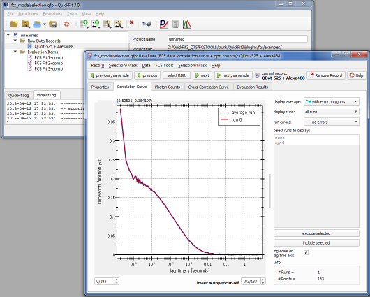
Performing a First Fit
Now we have to add a new fitting object and perform a fit:
- Add a FCS Fit item to the project, by clicking Data Items | Insert Evaluation | FCS Curve Fitting. A new entry with the fit will appear in the project tree.
- Double-click the fit in the project tree and the fit dialg will open. Here we will perform the fit:
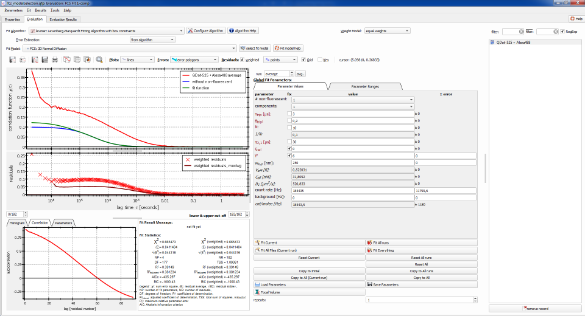
On the rhs you can select one of the available FCS files/RDRs in the project, but currently there is only one. On the left you see the correlation curve from the selected file/RDR (red), the fit with the current (initial) parameters (green/blue) and below that the residuals plot (red crosses). At the bottom, the plugin shows you the fit result statistics. On the right of the plots you see the current fit parameters and below them the buttons, that allow to perform the fits. At the top of the dialog you can choose the fit algoruhtm (should be: $$fitalgorithm:name:fit_levmar$$) and the fit model (choose: $$fitfunction:name:fcs_diff$$).
- After ensuring the proper fit model ($$fitfunction:name:fcs_diff$$), we first have to get rid of the sharp increase of the correlation curve at low lag times, which is caused by detector afterpulsing. This is done by setting the lower-bound spin-box at the right below the residuals plot to 3 or 4, which will remove the first 3 or 4 datapoints from the measurement:
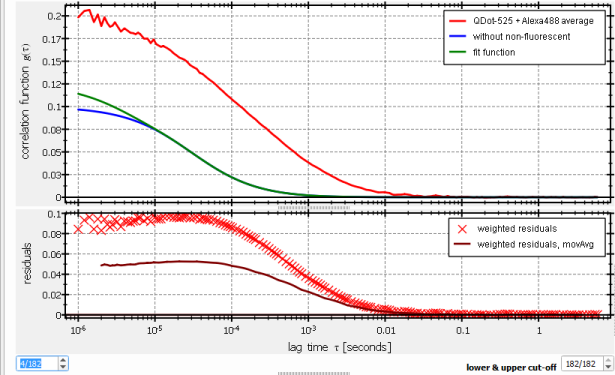
- Next we will set the parameter ranges properly: To do so, choose the tab Parameter Ranges above the fit parameters:
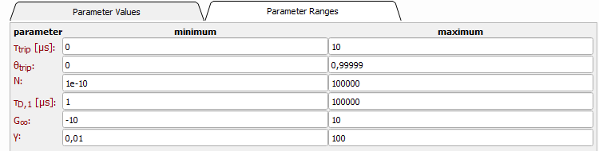
Here you should set the lower bound of the diffusion time τD,1 (and later of all other diffusion times) to 15µs, also the triplet ranges should be altered a bit:
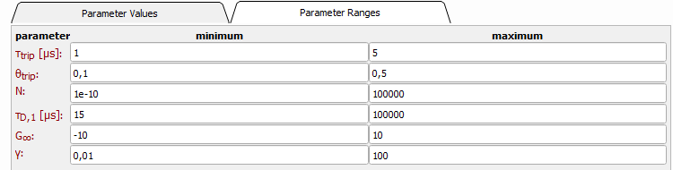
This will prevent the model parameters from going all over the place and the fit from using e.g. a diffusin component to describe the triplett dynamics. Also we use the information, that the Alexa-488 in the mixture has a triplet decay time of typically 2-3µs at the used measurement conditions and its raction is typiically 0.1-0.3.
- Now switch back to the fit paramteers, by choosing the tab Parameter Values.
- Now we are ready to perform the first fit, by clicking on the button Fit Current below the fit parameters. This is the result we get:
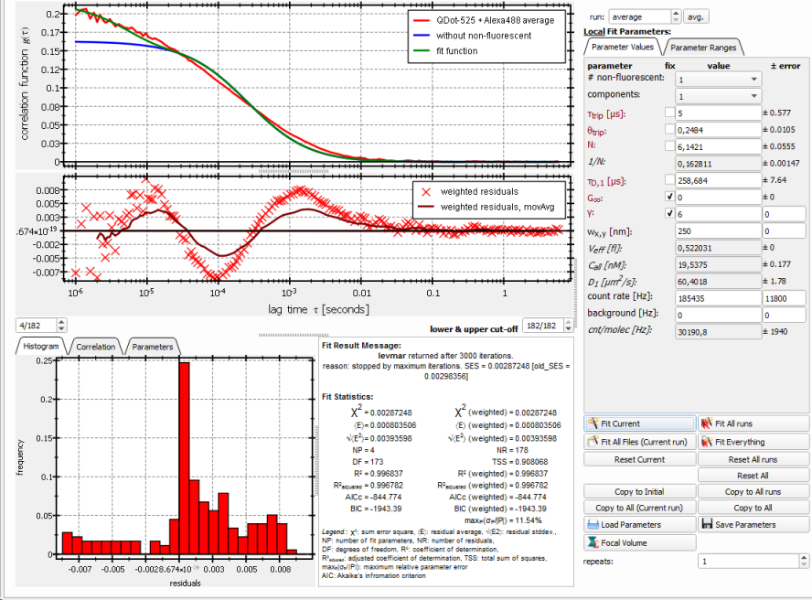
As you can see, the fit is not very good, as there is a significant "S"-shape in the residuals. This result is also somehow expected, since we know, that there are two different particles in the solution.
Perform Fits with more components
In principle one could simply go on from the last step and increase the number of components in the fit object. But this would overwrite the fit results, we already obtained and make the comparison of different models impossible. Therefore, we add three more fit objects of the type fcs_fit Help to the project and for each one repeat the steps from the last section. The only difference is, that we choose different numbers of (diffusing) components and non-fluorescent (states) for the model in each object:
| fit item |
components |
# non-fluorescent |
| 1-comp + triplet (already done) |
1 |
1 |
| 2-comp + triplet |
2 |
1 |
| 3-comp + triplet |
3 |
1 |
| 1-comp + 2 non-fluorescent |
1 |
2 |
$$note:Set the parameter ranges again as proposed above and don't forget to cut the first few datapoints from teh measurements!$$
$$startbox_note$$
If you have problems with the convergence of the fits, here are two things that you can try:
- Initially configure the fit model for 1-comp+triplett and perfomr that fit, then add one-by-one the other components and repeat the fit. This usually converges better, than immediately taking the full model and trying a fit.
- It often helps to use another fit algorithm, such as the $$fitalgorithm:name:fit_simanneal$$, which is a stochastic optimizer, which shows much better convergence for complex models, as levmar. So select the Simulatet Annealing fit algorithm, perform a fit and then switch back to $$fitalgorithm:name:fit_levmar$$ and fit again. This combination has proven to be very advantageous, when fitting complex models!
$$endbox$$
Here are a few screenshots of the anticipated reults of the new fits:
2-comp + triplet:
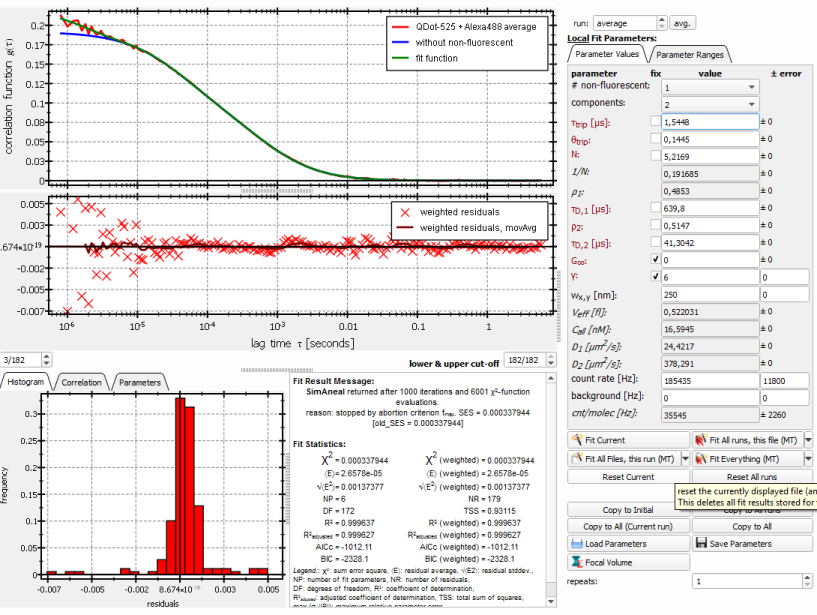
3-comp + triplet:
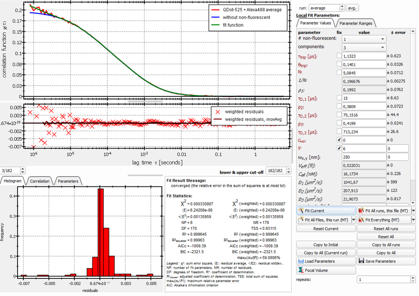
1-comp + e non-fluorescnet:
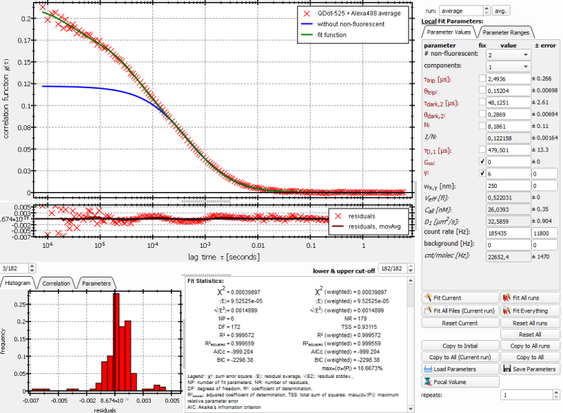
Model Selection
Now we are in a position to choose the model, which best fits our data and has the best relation between complexity and goodness of fit, i.e. honors the principle of parsimony, which states that you should use as few model parameters as possible.
- Close all the fit windows and double-click the raw-data item. Then choose the tab "Evaluation Results", which shows you a table of all the fit results for this RDR:
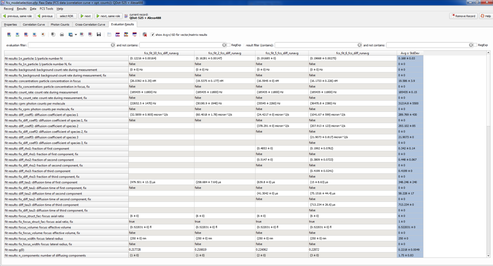
- Each row in this table corresponds to one fit parameter and each column corresponds to one of the fit evaluation objects in the projects. The names of the columns are e.g. fcs_fit_10_fcs_diff_runavg, which is a combination of the evaluation type fcs_fit, the evaluation ID 10, which can also be found on the first tab of the evaluation editor), the fit model ID fcs_diff and the run, that we fitted (average over all runs in the file, but there was only one run in the file!).
- The fit evaluation did not only save the fit results (e.g. the diffusion times, which can be found in the table), but also additional statistical parameters, which describe the goodness of fit. They are described in the fit statistics help page in detail. Here we will use two of these parameters. First, the residual sum of squares describes the squared deviations of the data from the model (it is also known as $(\chi^2)$ of the fit):
$[ \mbox{RSS}\ =\ \chi^2\ =\ \sum_{i=1}^K\left(\hat{g}_i-g(\hat{\tau}_i)\right)^2, ]$
where $(hat{\tau}_i,\hat{g}_i)$ are the $(K)$ measured datapoints on the autocorrelation curve and $(g(\tau))$ is the best-fit model function. This number gets smaller, when the model fits better. SO we expect it to get smaller and smaller, as we add components (i.e. degrees of freedom) to the model. So based on the $(\chi^2)$ one should select the model with the smalles $\chi^2)$-value.
The second number, that we will use is the so calle Akaike information criterion (AICc) $$ref:Akaike1974:Akaike H (1974) A new look at the statistical model identification. IEEE Transactions on Automatic Control 19: 716-723 DOI: 10.1109/TAC.1974.1100705$$$$ref:Levin2004:Levin M K, Carson J H (2004) Fluorescence correlation spectroscopy and quantitative cell biology. Differentiation 72: 1-10 DOI: 10.1111/j.1432-0436.2004.07201002.x $$$$ref:Burnham2002:
Burnham K P, Anderson D R (2002) Model Selection and Multimodel Inference. New York, London, Berlin: Springer$$, which is related to the RSS/$(\chi^2)$, but in addition penalizes more complex models with more parameters. It is defined as:
$[ \mbox{AICc}\ =\ K\cdot \log_{10}\left[\frac{\mbox{RSS}}{K}\right]+2\cdot\mbox{NP}+\frac{2\cdot\mbox{NP}\cdot (\mbox{NP}+1)}{K-\mbox{NP}-1}, ]$
where $(\mbox{NP})$ is the number of fit paramters in the model. The AICc is designed, so you should select the model with the smallest value (the most negative value, as you will see).
- We can find both parameters in the table by scolling down to the rows, which start with "fit statistics:". But there is a simpler way, as the table can be filtered. To do so, we can use the filter- input field right above the table:
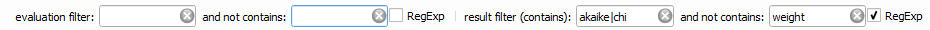
The first fields filter the columns and the second set of fields (which we will use) filters the rows/parameters. For a first test, filter out only the fit statistics fields, by entering "fit statistics" in the result filter (contains). The table will look like this then:
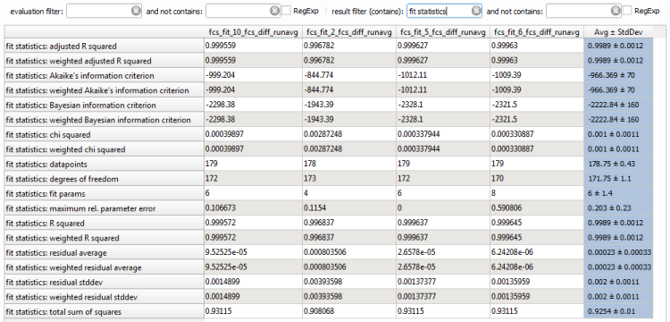
The blue column contains average and standard deviation over all entries in each row (and we can ignore it for our purpose). Now it is already easier to find the desired parameters.
- In a second step, we will use more advanced filtering and only select the rows of interest. For this we will use regular expressions for filtering, which are acivated with the checkbox RegExp at the right. Then enter the following filters into the filter fields:
- result filter (constains) = "akaike|chi squared", which selects only rows, that either contain "akaike", or "chi squared"
- and not contains = "weight", which removes rows, that contain "weighted" statistics parameters, which we don't want to look at here, as we didn't use a weighted fit.
Now the table should look as follows:
 The first column (ID 10) is the last fit object (1-comp + 2 non-fluorescent), the second column is the 1-comp+triplett model, the third column the 2-comp+triplett and the last column the 3-comp+triplett (Note that this order mght be different on your computer!). Summarizing the results, we get:
The first column (ID 10) is the last fit object (1-comp + 2 non-fluorescent), the second column is the 1-comp+triplett model, the third column the 2-comp+triplett and the last column the 3-comp+triplett (Note that this order mght be different on your computer!). Summarizing the results, we get:
| model |
AICc |
RSS/$(\chi^2)$ |
| 1-comp + triplett |
-845 |
0.00287248 |
| 2-comp + triplett |
-1012 |
0.000337944 |
| 3-comp + triplett |
-1009 |
0.000330887 |
| 1-comp + 2 non-fluorescent |
-999 |
0.00039897 |
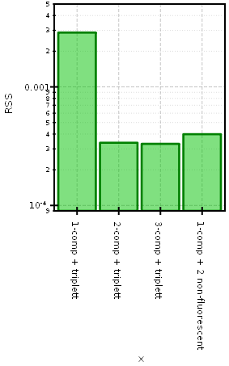
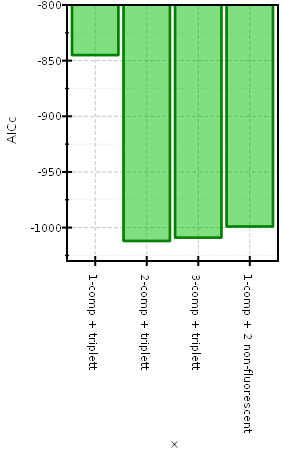
So from this table we can try to do a model selection:
- First look at the RSS $(\chi^2)$: The model "3-comp+triplett" has the smallest RSS, so we would select this one, but on the other hand we knwo, that we have only two diffusing species (quantum dots + Alexa-488) in the solution, so this might be overfitting, but how can we know that? The RSS does not give an answer to this.
- Now we look at the AICc, here more complex models are penalized and we get the smallest value for the model "2-comp + triplett". This seems to be a better choice, than the 3-component model from the RSS, as we decide against the overly complex model, which gave us a minor improvement in fit quality, but added two fit parameters to achieve this.
- Finally you can also look at the last moel, which assumes only one diffusing species, but which may have an additional dark state, which leads to long-term blinking. This model is in all cases better, than the simple 1-component model, but is rejected against the 2- and 3-component modely by both the RSS and the AICc. So only one diffusing species, but with complex photophysics also seems to be out of the question.
Summarizing you can use the methods presented in here to select a fit model, which is appropriate for your dataset, which is in the case presented here a 2-component model with triplett blinking, which also fits well to the expectation from the known sample.
References
$$references$$